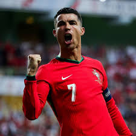

Cristiano Ronaldo – The Goal Machine
Full Name: Cristiano Ronaldo dos Santos Aveiro
Date of Birth: February 5, 1985
Country: Portugal 🇵🇹
Position: Forward
Current Club: Al Nassr (Saudi Arabia)
Jersey Number: 7
Former Clubs: Sporting CP, Manchester United, Real Madrid, Juventus
Career Highlights
- 5 Ballon d’Or Awards
- Over 850 career goals (all-time leader in official goals)
- 5 UEFA Champions League titles
- European Championship Winner (2016) with Portugal
- Nations League Winner (2019)
- Top scorer in UEFA Champions League history
- Only player to score in 5 different World Cups
Playing Style
Cristiano Ronaldo is known for:
- Powerful shooting with both feet
- Incredible heading ability — dominates in the air
- Elite fitness and strength — one of the most athletic players ever
- Speed and sharp movement even into his late 30s
- Deadly penalty and free-kick skills
Quote About Ronaldo
"Cristiano is a goal machine. He lives and breathes goals." – Zinedine Zidane
"Ronaldo is a player who can change the game in an instant." – Pep Guardiola
"His work ethic is unmatched. He’s a true professional." – Sir Alex Ferguson
"Ronaldo is a phenomenon. He’s a player who can do it all." – Lionel Messi
Fun Facts
- Named after former U.S. President Ronald Reagan
- Known as CR7 — based on his initials and jersey number
- Has his own fashion brand, hotels, gyms, and museum
- First footballer to become a billionaire
- One of the most followed people on social media 🌐

← Back to Football Index